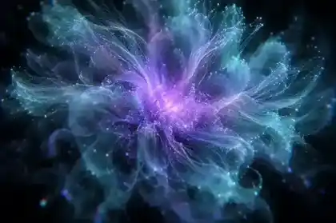
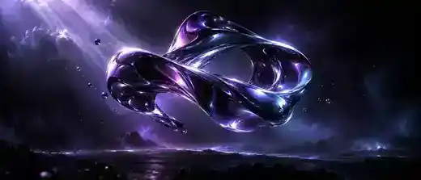
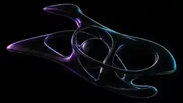
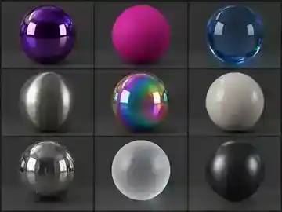

Project 01 — Brand Film
SENTIENT
Overview
Making an abstract AI product feel physical.
Elysian needed a launch film that made an abstract AI product feel physical — something you could almost touch before you understood what it did.
The idea centred on a single evolving form — a material that shifts between liquid, chrome and light as the product learns. Every beat of the film maps to a stage in that learning curve.
I handled the full pipeline: look development in Cinema 4D and Redshift, an AI-assisted texture and lighting exploration in ComfyUI, and the final grade and composite in After Effects.

Visual Development
From styleframes to final render.




Cinema 4DRedshiftAfter EffectsUnreal Engine 5ComfyUIPhotoshop